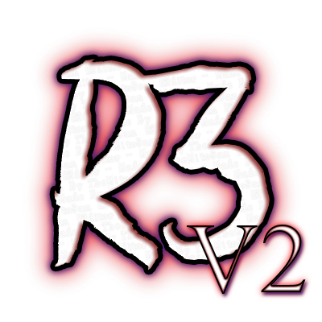

TheMitoSan Main Tools
R3ditor
This is the first tool used to create simple mods for all versions of Resident Evil 3!

R3V2
Being developed as closed-source, This is a remake of OG R3ditor! [WIP]
RJX Toolset
A tool written in HTML5 used to update, backup and restore Ryujinx files!
MythDeck
This is a very old experiment - a HTML5 (Radio-Like) Music Player.
R3ditor V2 (Aka. R3V2)
This is a early-alpha remake of R3ditor OG - A HTML5 / JS / NW experiment created to edit Resident Evil 3 OG!
For now you can decompile the game, open maps, edit SCD scripts, messages and cameras.
Some features (Like RE3SET and SAV Editor) are still missing, but they will be implemented later.
You can test the tool online - but to use all features, it's recommended you download the local version!
2020 - Site created by TheMitoSan, Art by Y (The Artist) zu